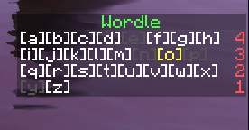

Incognito Plugin
Plugin allows to change
players nick and skin.
Is fully functionable
with FunnyGuilds

Chat configuration
Ability to disable or enable: private messages, kill messages, global messages, drop messages, auto messages, world cleanup messages, and store messages

Stone generator and autosell
The plugin adds 5 levels of stone generators, they all generate stone the same, but each has a different drop. The higher the level, the drop on more items and the greater the chances. Also in the plugin is an add-on to SkyBlock in the form of an autosell for cactus and sugar-cane

WordleMinecraft
Plugin allows to play Wordle on chat in game, new word is generating every day based on server time
SpigotMc website
WordleMinecraft
Plugin allows to play Wordle on chat in game, new word is generating every day based on server time
SpigotMc website

VCore
It's whole core for hardcore servers, that replace Essentials and have some additional features.
Like chat configuration or Magic Case

Plots
The plugin allows you to create allotment around the world in addition to spawn. WorldGuard is needed to operate, the allotment will not form if there is another allotmentnearby (so that they do not overlap). In addition, it is compatible with the ProjectKorra plugin and blocks magic in the allotment.

Drop, Vanish, Backup
The plugin includes a Drop from a stone (configurable, you can set the drop of each item in minecraft), a cupboard so that the player won't have more pearls and golden apples, Vanish is a panel so that the admin can choose whether he wants to pick up and drop items, open boxes and hit players, the backup of items in the inventory is performed at the death of the player, it also saves the points from FunnyGuilds that the player lost when there is some error or the player is killed by a cheater, the administrator can restore the player's items and points.
Shop integration
Works without any other plugins. Connects to an encrypted api for which a server key and client key are needed, after downloading commands from the api, it executes them on the server, if the command was directed to a player, then it checks if the player is online, after executing it, he enters in the database (MYSQL) what command is made, the exact date of execution, the nickname of the player and whether the player was on the server.